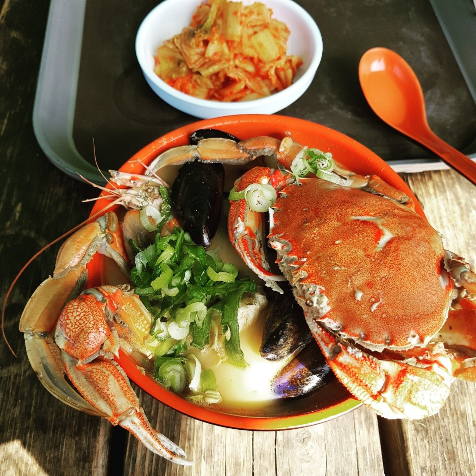

동경 130˚48′~131°52′, 북위 37˚14′~37°33′에 있다. 동해상에 격리된 울릉도와 그 부속도인 관음도·죽도·독도 및 삼선암·공암·죽암·청도·북저암·촉대암 등의 바위섬으로 이루어졌다. 주도인 울릉도는 울릉군 총면적의 98%를 차지한다. 포항에서 북동쪽으로 직선거리 210km, 죽변항에서 140km 떨어져 있다. 육지(강원도 삼척시 원덕읍 임원리)와 최단거리는 137㎞이다.
Hypertext Markup Language (HTML) is thestandard Markup Languge for 